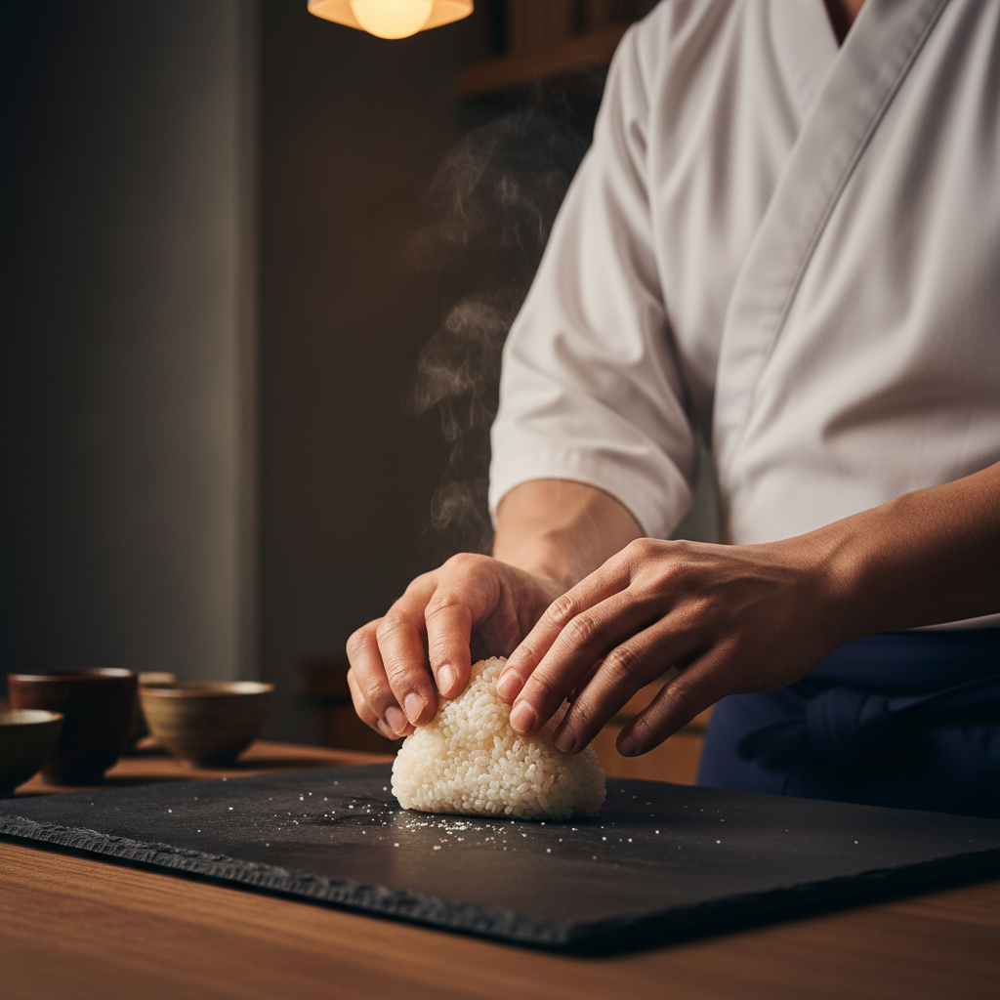

Paris Launch - Winter 2026
The Art of
The Art of
Warm Rice
12 Seats. 40°C. One Niigata Journey. Experience the theatricality of hand-pressed onigiri omakase in the heart of Paris.
Join the Private Tasting
Be the first to experience the "Golden 40°C" sensory journey. No plastic, no shortcuts.
Join others on the waitlist

The Sensory Moat
KOME disrupts the onigiri status quo by returning to the craft's roots.
Niigata Provenance
Exclusively serving "Uonuma Grade" Koshihikari rice, sourced directly from Niigata cooperatives.
The Golden 40°C
Rice served at the precise temperature where umami is maximized. Hand-pressed on demand.
Sake Pairing
Curated Niigata labels from Hakkaisan to Kubota, paired to enhance every bite.
A Theatrical Evening
Our 12-seat bar in the 1er Arrondissement is designed for intimacy. Watch the chef's hands work as each onigiri is served on ceramic or washi paper - never plastic wrap.
- 5 hand-pressed premium onigiri
- Seasonal otsumami appetizers
- Authentic Niigata sake flights
- Japanese Food Supporter certified